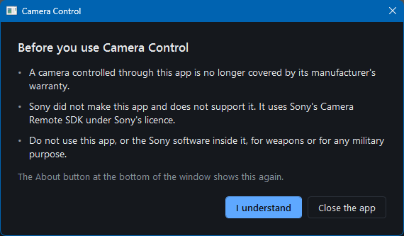
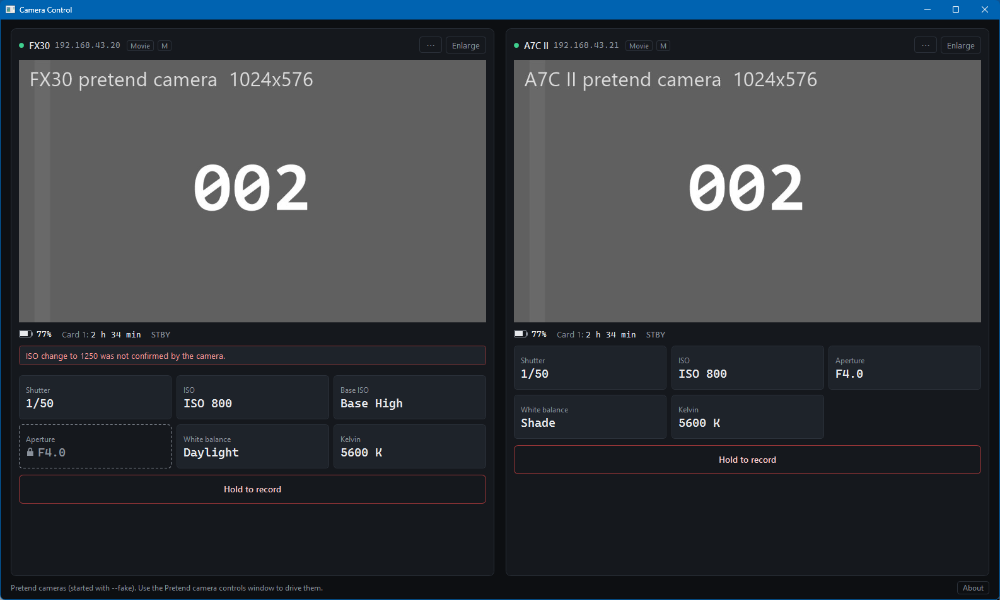
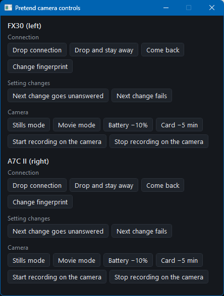

What you need
- A Windows 11 computer, 64-bit, with Wi-Fi. You don't install anything and you don't need administrator rights.
- A Sony FX30, a Sony A7C II, or one of each. The app shows up to two cameras. Other models show up in a network search but you can't pick them.
- A Wi-Fi network that both cameras and your computer can join. Your computer can host one itself (see Getting the cameras on Wi-Fi).
Live view arrives as a stream of still pictures at 1024×576, about 15 frames a second on a good link. Use it for framing, focus and exposure; it is not a recording-quality video feed.
Install and first start
- Download the zip and unzip it anywhere you can write to: the desktop, %LOCALAPPDATA%\CameraControl or a USB stick. You get one CameraControl folder.
- Keep every file in that folder together. The app needs the DLL files and the CrAdapter folder next to CameraControl.exe.
- Run CameraControl.exe.
Windows SmartScreen may warn you. The exe isn't signed, so Windows SmartScreen or an antivirus program may warn you the first time. In the SmartScreen window, click More info, then Run anyway.
The first time you start the app, it shows a notice about the camera warranty and Sony's licence (see Licence and warranty). Click I understand to carry on. You won't see it again unless you click About.

Getting the cameras on Wi-Fi
Your cameras and your computer must be on the same Wi-Fi network. You have two ways to do that.
Option 1: your computer hosts the camera network
Click Network at the top of the sidebar, then start the camera network. The window shows a network name and password. You need no router and no internet, and your computer can stay on another Wi-Fi network at the same time.
- Start the camera network in the app.
- On the camera: MENU › Network › Wi-Fi › Access Point Set. Pick the network name from the list, or use Manual Setting if it isn't listed, and type the password.
- Turn on PC Remote on the camera, connecting over Wi-Fi.
- The camera appears under Joined within a few seconds.
You only do this once per camera. After that, start the network on set and the cameras join it by themselves. The network stops when you close Camera Control. A phone on this network shows no internet; that is expected.
Option 2: a network you already have
A phone hotspot, Windows Mobile Hotspot, a travel router or a home network all work. On each camera, turn on PC Remote and join the network under Access Point Set.
Adding a camera
Before you start, leave access authentication on in the camera (MENU › Network › Network Option › Access Authen. Settings) and note its user name and password.
- Click Add camera in the sidebar, or in an empty column.
- Choose Type the IP address and enter the address the camera shows under Network › Wi-Fi › Display Wi-Fi Info, then pick the model. Or choose Search the network, which takes about 30 seconds. Typing the address is the reliable way in; the search can miss cameras on some networks.
- Enter the access authentication user name and password, then click Get fingerprint.
- Compare the fingerprint the app shows with the one on the camera: MENU › Network › Network Option › Access Authen. Settings › Show Settings › Fingerprint. If they match, click Accept.

After that, the app connects both cameras by itself every time you start it. Each connection takes about a second and a half.
The main window
Each camera has a column. From top to bottom: the camera's name, IP address and mode; the six live view tool switches; the live view; the status line; messages; the setting tiles; and the record button.
The status line shows battery, card time left, and whether the camera is recording, for example 77% Card 1: 2 h 34 min STBY. Battery turns amber at 20% and red at 10%. Card time turns amber at 10 minutes and red at 3 minutes.
Sidebar
| Button | What it does |
|---|---|
| Network | Opens the camera network window. A green dot means the network is on. |
| Phones | Lets phones connect to the app (see Phones). |
| Add camera | Adds a camera on the free side. Greyed out when both sides have a camera. |
| Swap sides | Swaps the left and right cameras. |
| Link settings | Repeats each change on the other camera (see Matching the two cameras). A green dot means it is on. |
| Copy files | Opens the Copy files window. A blue dot shows while files copy. |
| About | The version, the licence notice and the warranty notice. |
Column menu (the ⋯ button)
Swap sides, live view quality (High or Low), Copy settings to the other camera, Edit login, Change IP address, Disconnect or Reconnect, and Remove camera.
Enlarge
Click Enlarge or double-click a live view to give that camera most of the window, with its tiles in one row. The other camera moves to a narrow column that keeps its live view, status line and record button. Press Esc, click the button again or double-click the live view to go back.
Changing settings
Click a tile to open a list of the values the camera allows right now, with the current one highlighted. Pick one with the mouse, or with the arrow keys and Enter.
| The tile shows | Meaning |
|---|---|
| White value | The value the camera is using now. |
| Amber value | Sent, waiting for the camera to confirm. You can't change the tile again until it does. |
| Green flash | The camera confirmed the change. |
| Dashed border, padlock | Locked. The camera won't let you change it right now. Click it to see why, for example "The camera's exposure mode (A) sets the shutter speed" or "Choose Kelvin white balance first". |
| Greyed | The camera isn't connected. |
If the camera doesn't confirm a change within 5 seconds, the tile goes back to the camera's real value and a red message such as "ISO change to 800 was not confirmed by the camera" appears in the column.

The app never changes the exposure mode, stills or movie mode, or shutter mode. You set those on the camera, and the column header shows them as text.
Recording
Press and hold the record button for about one second. A bar fills while you hold; letting go early cancels. The status line then shows a red REC and a timer. Hold again to stop.
There is no keyboard shortcut for recording, so a stray key press can't start or stop it. In stills mode the button is greyed and says "Camera is in stills mode".
If you close the app while a camera records, it asks first. Closing the app doesn't stop the recording.
Live view tools
Above each live view are six switches. A switch that is on is blue and says what it is set to. The ▼ arrow opens its menu. These tools change only the picture on your computer, never your camera or your recording.
| Switch | Choices |
|---|---|
| LUT | Any 3D .cube file. Load .cube… adds your own. The S-Log3 / S-Gamut3.Cine to Rec.709 LUT comes with the app. |
| False colour | S-Log3 reads the camera picture before the LUT. Rec.709 reads the picture as shown, after the LUT. |
| Peaking | Red, yellow, blue or white; low, medium or high. |
| Zebra | Above a level (94% by default), or a Range around one (70% ± 5% by default). |
| Waveform | Luma, or an RGB parade. |
| Histogram | Luma, or RGB. The strips at each end light up when more than 1% of the picture clips. |
Reading S-Log3 false colour
| Colour | Meaning | Level |
|---|---|---|
| Purple | More than 6 stops under grey, almost no detail | under 5.7% |
| Blue | Deep shadow, noisy (−6 to −4 stops) | 5.7–12.2% |
| Green | 18% grey, ± ¼ stop | 38.5–42.8% |
| Pink | One stop over grey, light skin | 47.1–51.5% |
| Yellow | Near clipping, +5 stops | 84.9–92% |
| Red | Clipped | 92% and over |
With the S-Log3 scale on, an amber line under the legend warns when the camera says its picture probably isn't log: its gamma isn't S-Log3, or its Monitor LUT or Gamma Display Assist is on.
The Rec.709 scale uses ARRI's bands: purple 0–2.5%, blue 2.5–4%, green 38–42%, pink 52–56%, yellow 97–99%, red 99–100%.
Each camera keeps its own choices, and they follow the camera when you swap sides.
Touch to focus
Click once on a live view to focus there. The camera does what its own touch setting says, such as spot focus or tracking. A small circle marks the point, amber until the camera accepts it, then white.
While the camera allows it, a Cancel touch button sits in the top right of the live view; a right-click does the same. The camera's own focus frames (the focus area, faces and the tracking frame) are drawn as thin white outlines.
If the camera won't take a remote touch, the pointer stays an arrow and the reason shows when you click. A double-click still enlarges the camera and sends no touch.
Matching the two cameras
Copy settings once
In a column's ⋯ menu, choose Copy settings to the A7C II (or to whichever camera is in the other column). The other camera is set to match. When it's done, the other column says what matched and what didn't, for example "Copied from the FX30: 6 settings match. Nearest: Aperture F4.0 for F2.8. Not copied: Shutter (shutter angle on the FX30)."
You can only use it when both cameras are connected, the other camera isn't recording and no copy is already running.
Link settings
Turn on Link settings in the sidebar. Each change you make in the app, on either camera, is then repeated on the other one once the first camera confirms it. Changes you make on a phone count; changes you make with the camera's own dials or menus don't. The link is off each time the app starts.
Some settings are never copied: Base ISO (the A7C II has none), Custom white balance (each camera measured its own), shutter angle, and ISO while the FX30 is in Cine EI. A setting with no exact match on the other camera gets the closest value, and the column says so.
Copying files
- Click Copy files in the sidebar. You see each camera's card, left camera first.
- Tick files, or use All, Clips (every movie clip) or None.
- Press Copy. The first time, pick a folder; Change… picks another later. Each camera gets its own folder inside it, for example D:\Shoots\FX30\.
Each row then shows Waiting, a percentage, "Paused" while the camera records, Copied, Cancelled, or why it failed. You can close the window while files copy; they carry on, and the sidebar button shows a blue dot until they're done. Nothing on your cards is changed or deleted.
Copying over Wi-Fi is slower than a card reader, and live view may slow down while it runs. For a whole day of clips, a card reader is still faster.
Phones
Click Phones in the sidebar, then Let phones connect. The window shows an address such as http://192.168.137.1:8080 and a six-digit PIN.
- On your phone, join the same Wi-Fi network as your computer and open the address.
- Type the PIN once.
- Pick the FX30, the A7C II or both at the top of the page.
The phone shows live view with focus frames, the status line, the setting tiles and the record button. Tap a tile to change it, tap the picture to focus, and hold the record button for a second to record. Each phone has a Tools button per camera for its own LUT, false colour, zebra, peaking, waveform and histogram.
Every phone and your computer can change settings. If two people change the same setting, the later change wins, and every screen shows the value the camera confirmed. A phone can't add or remove cameras or change logins.
Which browser to use. On the phone whose hotspot your computer has joined, use Firefox; Chrome can't reach your computer from there. On any other phone, turn mobile data off so Chrome uses the Wi-Fi.
If no phone can load the page on a new computer, allow Camera Control on public networks in Windows Defender Firewall.
New PIN disconnects every phone. Closing the app ends every phone's login too, because each start makes a new PIN. The phone page can't keep the phone's screen on, so raise your phone's screen timeout.
When something goes wrong
Problems with one camera show in red in that camera's column, so you always know which camera is affected. The other camera carries on as normal.
| You see | What to do |
|---|---|
| "Reconnecting 0:42" over a dimmed picture | The camera dropped off Wi-Fi. The app reconnects by itself and reads every setting again when it's back. If the camera was recording, it keeps recording on its own. |
| "No reply from 192.168.43.20" | Check the camera is on, on the same network and in PC Remote. The app tries again every 15 seconds. Use Search the network or Change IP address if the address changed. |
| "Camera refused the user name or password" | Click Edit login and enter the access authentication details again. The app doesn't retry this by itself. |
| "This camera's fingerprint has changed" | Expected after resetting the camera. Check the new fingerprint on the camera before accepting it. If the camera wasn't reset, don't accept. |
| Regular stutters in live view | Windows' background Wi-Fi scans can cause this. See below. |

Live view stutters every few seconds
Windows searches for Wi-Fi networks in the background, and on some computers this causes short stutters. You can pause these searches for a shoot. While paused, your computer won't join other networks by itself, and may not rejoin the camera network by itself if it drops. Open a Command Prompt with Run as administrator:
netsh wlan set autoconfig enabled=no interface="Wi-Fi"Turn them back on when you finish:
netsh wlan set autoconfig enabled=yes interface="Wi-Fi"If your Wi-Fi adapter has a different name, netsh wlan show interfaces lists it.
Trying it without cameras
Open a Command Prompt or PowerShell window in the app folder and run:
CameraControl.exe --fakeYou get two pretend cameras, an FX30 on the left and an A7C II on the right, playing test pictures. The Pretend camera controls window can drop a connection and bring it back, leave a change unanswered, switch between stills and movie mode, and lower the battery or card time.

With --fake the app doesn't read or change your saved cameras or passwords, and writes its log to fake.log.
Settings, passwords and logs
| What | Where |
|---|---|
| Settings | %AppData%\SonyCameraControl\settings.json: saved cameras (name, IP address, fingerprint, user name, live view quality), window position, tool choices. Never a password. |
| Passwords | Windows Credential Manager, under Windows Credentials, one entry per camera named SonyCameraControl:camera:<id>. Remove camera in the column menu deletes it. |
| Your LUTs | %AppData%\SonyCameraControl\luts\ |
| Logs | %AppData%\SonyCameraControl\logs\app.log, up to 5 files of 5 MB. Never holds passwords or user names. |
Deleting the app folder doesn't remove these. To start again from nothing, delete %AppData%\SonyCameraControl and the Credential Manager entries.
If the app ever stops with an error, the details are in app.log; send that file along with any bug report.
Licence and warranty
A camera controlled through this app is no longer covered by its manufacturer's warranty.
Sony did not make this app and does not support it. It uses Sony's Camera Remote SDK under Sony's licence.
Do not use this app, or the Sony software inside it, for weapons or for any military purpose.
NOTICES.txt in the download holds the licences of libssh2 and the Cascadia Mono font, which the app includes. Sony, FX30 and A7C II are trademarks of Sony Group Corporation.